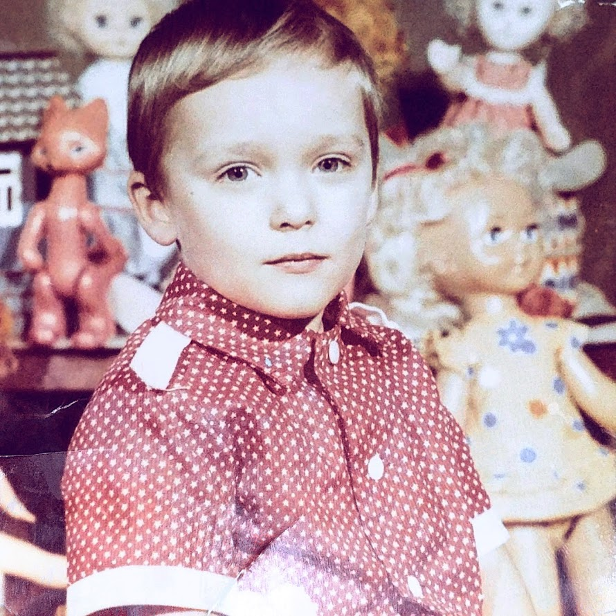

 Hello! Grating you on my portfolio site. Us you know, my name is Dzmitry. I know kind of weird name right? Why this guy need “Z” in the name and how to pronounce it?..
Well that is all about difference of languages. Originally, I am from Belarus. NOT Russia. However, we are really friendly with Russia (any country should have friends). We have long history with Russia. Among with other 15 republics we used be same country named USSR.
Long story short, Russian language was main language in USSR. But we also have native Belarusian language. So, Belarus considers as bilingual country. All work papers (like passport or certificate of birth) written in two languages and transcription in Latin.
In Russia language my name spells like “Dmitriy”. In Belarusian language “Dzmitry”. But transcription in Latin made from Belarusian language because it is native language.
That is why I have “Z” in name. But it is absolutely same name as Russian “Дмитрий” or Belarusian “Дзмiтры”.